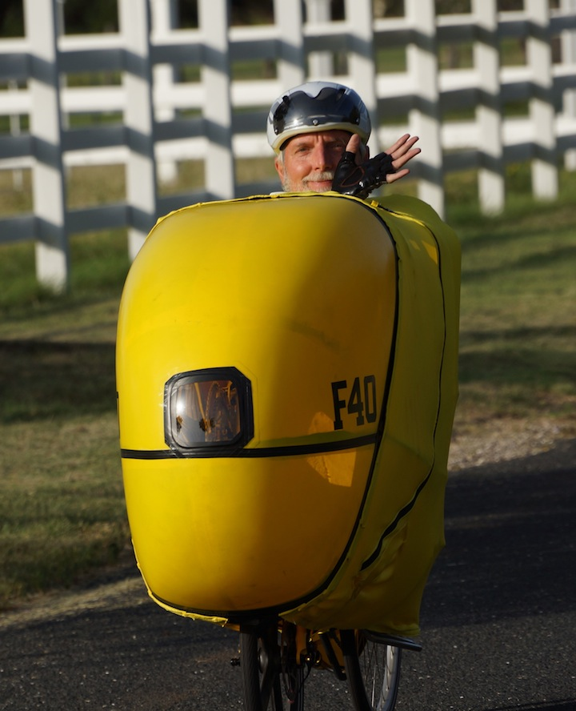

Another training day on the F-40
07 Aug 2013

Another F-40 training day in the neighborhood. Winds 14 mph gusting to 19 mph. Finally got the boom length dialed in. Camelbak installed and hydration is good. Now I need to get some rear view mirrors installed.
Switched from bicycle shorts to running shorts - much more comfortable and cooler.